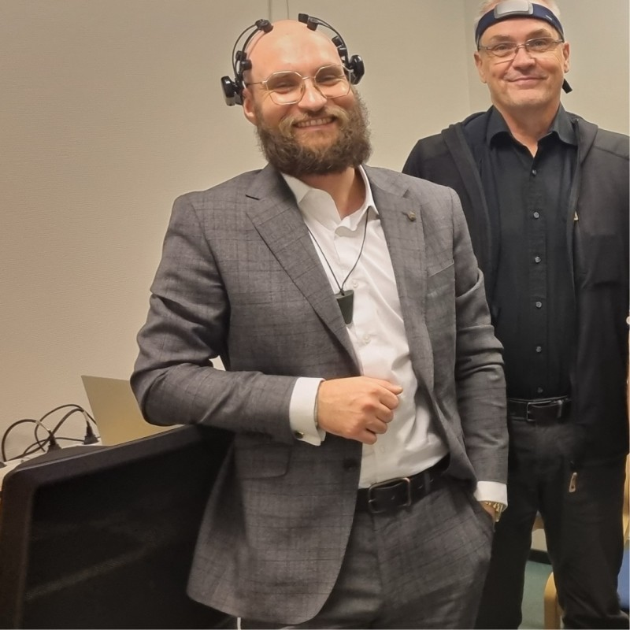
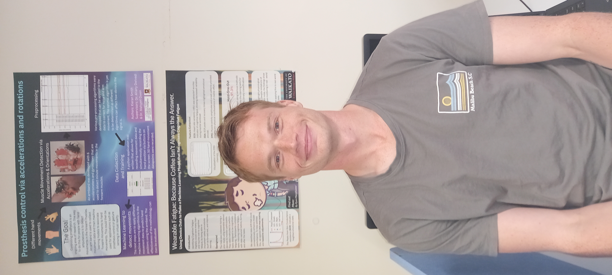

About
Te Kura Rau Mahara is an interdisciplinary research group that works with biosignals and wearable technology for the empowerment of people.
It is a collaboration between Human Centred Computing (HCC), School of Computing and Mathematical Sciences, School of Engineering, Te Kotahi Research Institute, School of Health, and the AI Institute.
Te Kura Rau Mahara aims to prioritize and recognise the contribution of Māori knowledge in all academic disciplines; conduct research that prioritizes people through a focus on biosignals; and create a space dedicated to innovation, interdisciplinary research and collaboration.
Academics

Dr. Jemma König
View Iris Profile
Jemma is a Lecturer in the Department of Software Engineering, in the School of Computing and Mathematical
Sciences, at the University of Waikato. Her research centres on Internet of Things (IoT), wearable
technology, and big data for health applications.

Dr. Mitchell Head
View Iris Profile
Dr Head is a neuroscientist & neuroengineer working at the interface of Mātauranga Māori, Neuroscience and biomedical engineering, interested in optimum states of consciousness, brain-computer interface, and the health potential of treatments derived from this lens.

Dr. Mahonri Owen
View Iris Profile
Dr. Mahonri Owen is an academic and researcher at the University of Waikato, known for his work in neural
prosthetics. He holds a place in the School of Engineering, focusing on the development of brain-controlled
prosthetic hands and by extension biomedical engineering.
Current Students and Staff

Ryan Manchester
Detecting Cognitive Fatigue with Wearable Sensors
Ryans Masters project focuses on creating and analyzing a multimodal dataset using wearable sensors,
including EEG, ECG, EMG, EDA, and IMU, to detect cognitive fatigue. This multimodal dataset will then be used
to identify unique patterns linked to cognitive fatigue using Machine Learning.
Simeon Ensing
Decoding Minds: Uncovering Features of Flow
My research project focuses on developing an EEG-based cognitive state classifier for a closed-loop
neuromodulation device. The aim is to reliably differentiate between flow and default cognitive states by
optimizing digital signal processing and deep learning techniques.
Dr. Chris Batterton
Postdoc Biophysics
Dana
Mechanical Engineering Capstone
.jpg)
Luke August
Phd: advancing prosthetic design